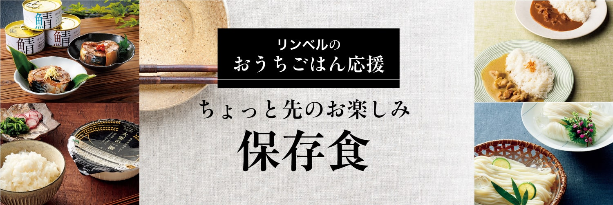
「安心で安全」、そして「おいしい」を、ずっと先まで。
ご自宅用にも、贈り物にもおすすめな、
長持ちグルメを選りすぐりました。
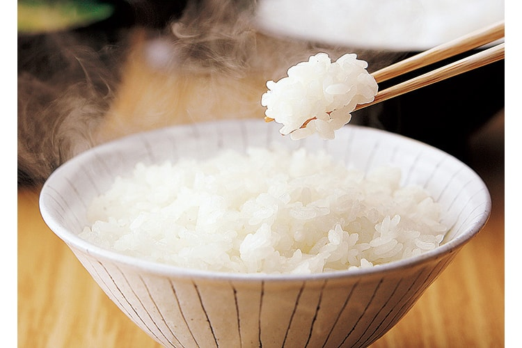
- 大将の一膳 雪若丸
- 1,080円（税込）〜
雪若丸の特徴である粒の大きさ、粒感に徹底してこだわったごはんです。レンジで約2分加熱するだけで、しっかりとした粒感を感じられる炊きたてごはんが味わえます。
-
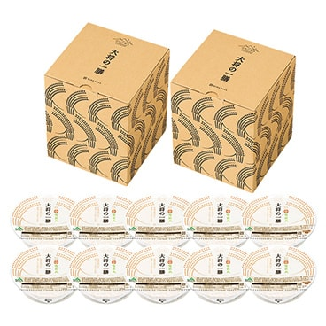
山形の極み 大将の一膳 雪若丸
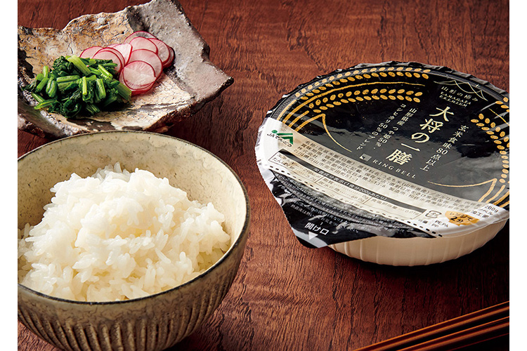
- 山形県 大将の一膳
- 1,080円（税込）〜
食味値数の高い、厳選された山形県産のブレンドで実現した「大将の一膳」。食味値とは、米のおいしさを表す指数のことで、65点から75点が日本産米の標準値ですが、「大将の一膳」は玄米食味80点以上と高得点のみの原料を使用。
常温で240日保存可能、レンジで温めるだけで炊きたての絶品白米をお召し上がりいただけます。
ここが「極み」
- 玄米食味80 点以上の厳選した山形県産「つや姫」50％、「コシヒカリ」50％をブレンドし絶妙なおいしさを実現。
-
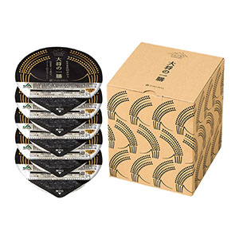
山形の極み 山形県 大将の一膳
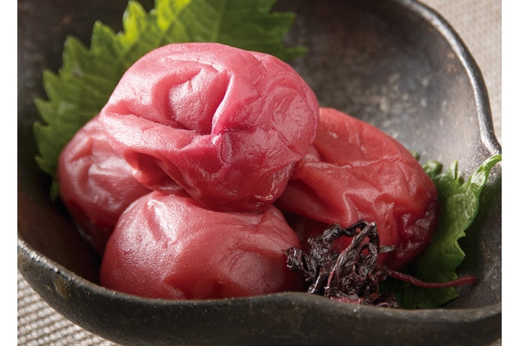
- 紀州南高梅
- 2,700円（税込）〜
塩分約3％の低塩梅干。化学調味料不使用にこだわり、梅干し本来の酸味と風味が豊かで、ほんのりとしたしそ風味が特徴です。
-
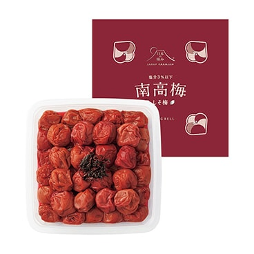
日本の極み 紀州南高梅
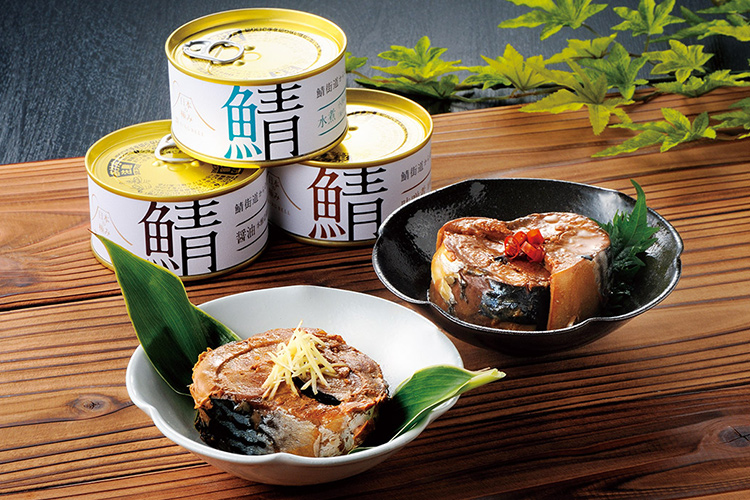
- 福井県 鯖缶セット
- 4,320円（税込）〜
「鯖街道」ともいわれる鯖どころ福井特有の調味技術により、脂ののった鯖を味艶豊かに仕上げました。醤油、唐辛子、生姜などバラエティ豊かな味わいを、セットでお届けします。
下処理いらずで手軽に食べられて、長期保存もできるので、いつでも鯖本来の美味しさをお楽しみいただけます。
ここが「極み」
- ＜醤油＞
- 防腐剤を使用せず、関西風のまろやかな特注の醤油で味付け。
- ＜唐辛子入＞
- 味付缶詰に唐辛子を加え、ピリ辛風に仕上げ。
- ＜生姜入＞
- 味付缶詰に生姜を加えることで、コクがある鯖缶にすっきりした味わいをプラス。
- ＜味噌煮＞
- こだわりの鯖と、県産の「五徳みそ」を使用。
- ＜水煮＞
- 素材の味をそのままに、こだわりの塩で味付け。
-
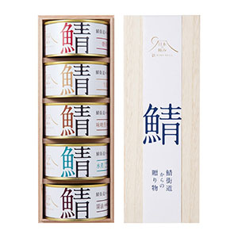
日本の極み 福井県 鯖缶セット
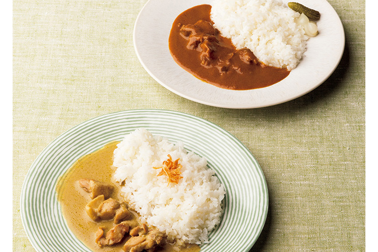
- 兵庫県 淡路島の玉ねぎ牛すじカレー＆グリーンカレー
- 4,320円（税込）〜
やわらかくなるまで煮込んだ国産牛すじ肉と、温暖な気候で育てられた甘くてやわらかな淡路島の玉ねぎ。ふたつの旨みが溶け込んだカレーをお届けします。出来たてを真空パックにして即冷凍しているので、おいしさはそのまま。温めるだけでコクと風味のある特製カレーがいただけます。
ここが「極み」
- 玉ねぎ栽培に適した気候、地形の淡路島産玉ねぎを使用。
- 出来たてをそのまま真空パック冷凍。
- 牛すじと玉ねぎから出るスープがカレーのおいしさを引き立てます。
- 玉ねぎの旨みが生きたココナッツミルクスープのクリーミーな舌触り。
-
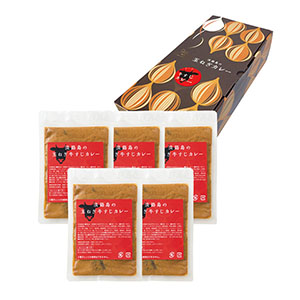
日本の極み 兵庫県 淡路島の玉ねぎ牛すじカレー
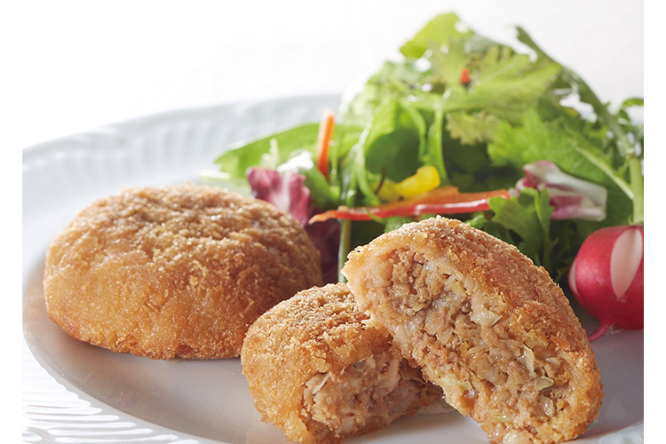
- 観音池ポークメンチカツ
- 2,160円（税込）〜
宮崎県都城市で生産される銘柄豚「観音池ポーク」に地場産の野菜をふんだんに混ぜ込んだメンチカツ。ジューシィな肉汁とふんわりした食感が口いっぱいに広がります。
冷凍で一年間保存ができて、調理はレンジで温めるだけ。本格的なメンチカツの味を手軽にお楽しみいただけます。
-
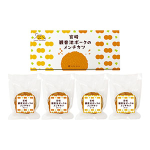
日本の極み 宮崎 ポークメンチカツ
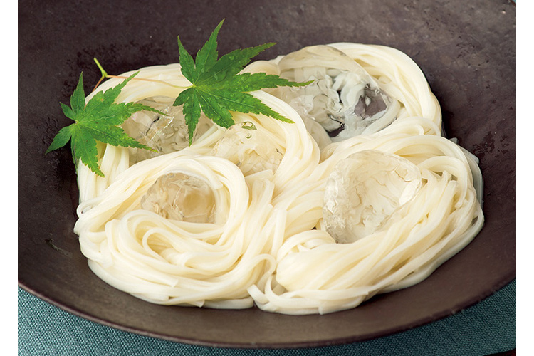
- 秋田県 延寿庵稲庭手延うどん
- 5,400円（税込）〜
日本三大うどんのひとつ稲庭うどん。伝統製法を守りていねいに手作りする〈延寿庵〉の稲庭うどんは、香り高い北海道産小麦を１００%使用。〝食品のミシュラン〞といわれるiTQi（国際味覚審査機構）で、２０１０年から２０１８年まで連続して優秀味覚賞を受賞している品です。
ここが「極み」
- 北海道産小麦を100%使用。
- 2010年iTQ i（国際味覚審査機構）で優秀味覚賞を稲庭うどんとして初受賞。以降2018年まで連続受賞を続けている。
-
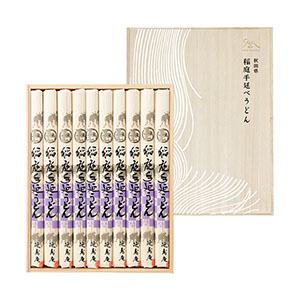
日本の極み 秋田県 延寿庵稲庭手延うどん
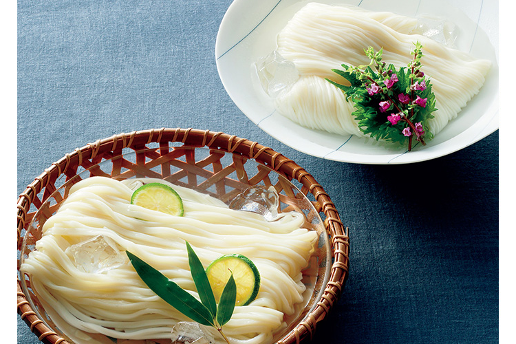
- 名古屋よしだ麺乾麺セット
- 3,240円（税込）〜
120年余の伝統を誇る名古屋の老舗、吉田麺業。保存料や添加物はいっさい使用せず、小麦粉、塩のみを材料に、昔ながらの製法で伝統の味を守っています。細うどん、そうめん、めんつゆの乾麺セットは、たっぷりのお湯で麺をゆであげれば、手軽に名古屋の味がいただけます。こしのある、モチモチとした食感をお楽しみください。
ここが「極み」
- 創業明治23年。120年の伝統を守る老舗。
- 保存料などの添加物は一切不使用。小麦粉、塩だけを使った手作り麺。
- 吟味を重ね厳選した各地の小麦粉を麺の種類や季節に応じて配合。
-
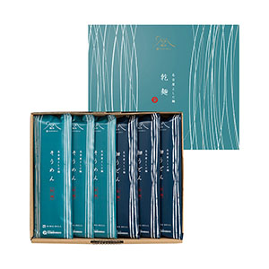
名古屋よしだ麺乾麺セット（各3つ）
料理研究家やグルメライターも絶賛！
味わってみると、なんというむっちり感でしょう
釜で炊いたようなみずみずしさ
フードライター 猫田しげる さん
詳しくはこちら